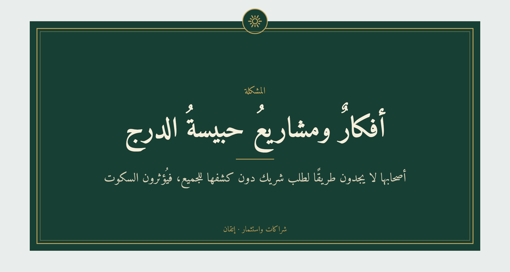
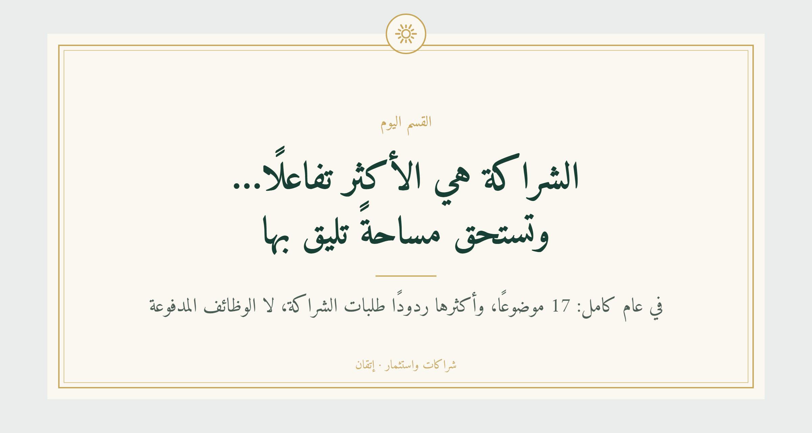
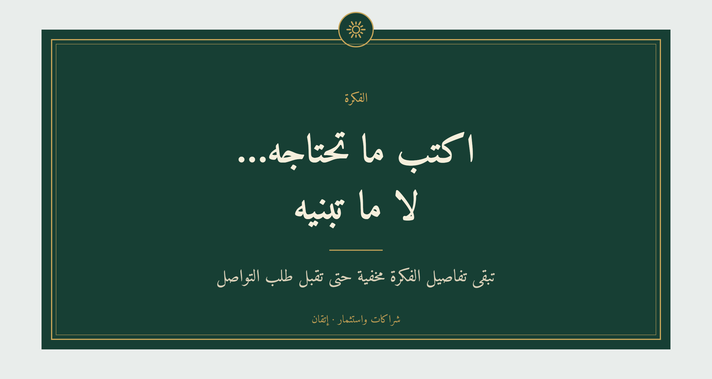
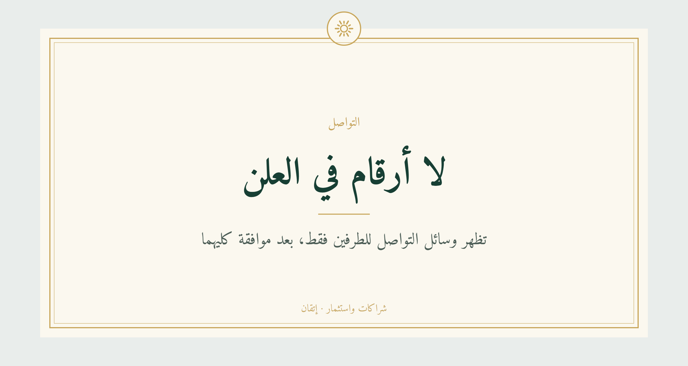
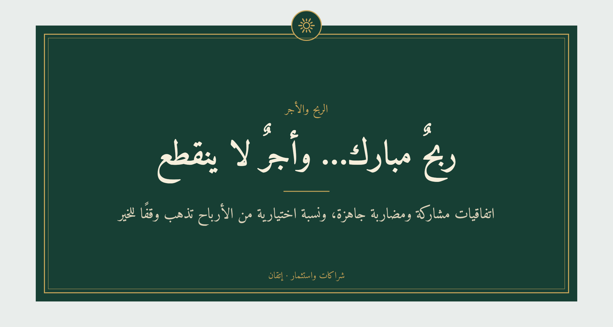
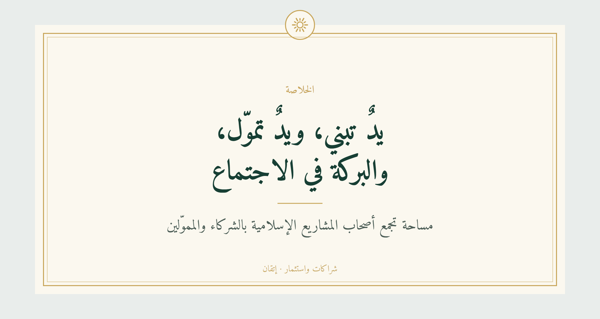

السلام عليكم ورحمة الله وبركاته،
كثير من المشاريع القرآنية والإسلامية تُبنى «لوجه الله»، وهذا من أجمل ما في إتقان. لكن بعض المشاريع تحتاج أيضًا شريكًا يكملها، أو نموذجًا ربحيًا منضبطًا يضمن استمرارها. ولهذا خصّص إتقان قسم «الفرص والوظائف»، ومن أهدافه كما في وصفه: «البحث عن شركاء ومساهمين». وهذا المقترح يبني على هذه الرؤية، ويمنح القسم أدوات تعين على تحقيقها.

ما لاحظته في القسم اليوم
- قرابة 17 موضوعًا في سنة، أي موضوع واحد تقريبًا في الشهر.
- ثلاثة أنواع مختلطة في قائمة واحدة: من يبحث عن عمل أو تطوع، ومن يبحث عن شريك لمشروعه، ووظائف مدفوعة. ولا سبيل إلى التمييز بينها إلا بفتح كل موضوع.
- مواضيع الشراكة هي الأكثر تفاعلًا، أكثر من الوظائف المدفوعة. فالرغبة موجودة، وتستحق مساحة تليق بها.
- لا حالة للمواضيع: لا تعرف أهي ما زالت مفتوحة، أم وجد صاحبها من يريد.
- التواصل بكتابة الأرقام في الردود العامة، أو «راسلني».
- صاحب الفكرة لا يجد طريقة لطلب شريك دون كشف فكرته للجميع، فيُؤثر السكوت. وأنا منهم: عندي تطبيق جاهز تقريبًا، وأتردد في عرضه هنا لهذا السبب.

المقترح: ترقية القسم، لا إضافة قسم جديد
وأقترح له اسمًا جديدًا: «شراكات واستثمار». الشراكة أولًا لأنها الأصل، والاستثمار لأن بعض المشاريع تحتاج ممولًا بصيغة المشاركة أو المضاربة. ويبقى فيه ما كان في القسم من وظائف وتطوع.

- فرص منظَّمة: نموذج قصير بدل الموضوع المفتوح. لكل فرصة نوع (أبحث عن شريك، أعرض خبرتي، وظيفة مدفوعة، تطوع، تمويل)، وحالة (مفتوحة، قيد التواصل، اكتملت)، وما يحتاجه المشروع، ونوع الشراكة، والوقت المطلوب. مع تصفية بالنوع والحالة والنموذج (ربحي، وقفي، مختلط).
- إخفاء تفاصيل الفكرة: يكتب صاحب الفرصة ما يحتاجه، لا ما يبنيه. وتبقى التفاصيل مخفية حتى يقبل طلب التواصل، مع اتفاقية سرية مبسطة يوافق عليها الطرف الآخر بضغطة.
- دليل للأشخاص: بطاقة لكل من يريد: مهاراته، ونوع المساعدة (شريك، بأجر، متطوع)، ووقته المتاح، وأعماله السابقة.
- تواصل بموافقة الطرفين: لا أرقام ولا بريد في الصفحات العامة. زر «اطلب التواصل»، فإن قُبل الطلب ظهرت وسائل التواصل (واتساب، تيليجرام، بريد) للطرفين فقط. وإن لم يُقبل أُرسل اعتذار لطيف جاهز، فلا يبقى أحد معلّقًا.
- قسم حيّ: الفرصة التي لا تُحدَّث خلال 60 يومًا يُسأل صاحبها هل ما زالت مفتوحة، فإن لم يرد أُغلقت. وعند اكتمالها يكتب كل طرف توصية للآخر، فتُبنى الثقة مع الوقت.
- لمسة من ديننا: نماذج جاهزة للمشاركة والمضاربة والعمل بأجر، يراجعها مختص مرة واحدة. وتعهد اختياري بـ**«نسبة وقفية»** من الأرباح لعمل خيري أو لدعم إتقان، تظهر شارتها على الفرصة. فيجتمع الربح المنضبط و«لوجه الله» في مكان واحد.

النموذج التجريبي
صفحات مترابطة يمكن التنقل بينها: القسم قبل الترقية، والفرص بعدها، وصفحة فرصة، ودليل الأشخاص، وملف شخص، ونشر فرصة، وطلباتي، ونماذج الاتفاقيات.

البدء خطوة خطوة
- الآن، دون برمجة: تغيير الاسم إلى «شراكات واستثمار»، ووسوم للنوع والحالة، وموضوع مثبت بقالب موحد للنشر.
- بعدها: إضافة تضيف حقول الفرصة والتصفية والحالة.
- ثم: دليل الأشخاص، وطلبات التواصل بموافقة الطرفين، والتوصيات.
أسئلة للفريق
- هل ترون تغيير الاسم إلى «شراكات واستثمار» مناسبًا؟
- هل تفضلون البدء بالوسوم والقالب لقياس الإقبال أولًا؟
- من يمكنه مراجعة نماذج الاتفاقيات شرعيًا وقانونيًا؟

أضع الفكرة والنموذج التجريبي بين أيديكم، والأمر للفريق.